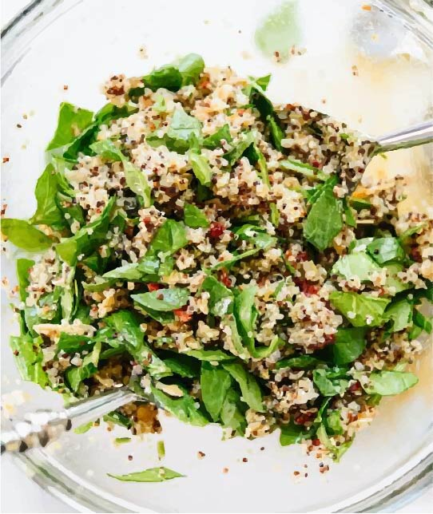

<!DOCTYPE html>
<html lang="en">
<head>
  <meta charset="UTF-8">
  <meta name="viewport" content="width=device-width, initial-scale=1.0">
  <title>Page Title - Entry 2</title>
  <link rel="preconnect" href="https://fonts.googleapis.com">
  <link rel="preconnect" href="https://fonts.gstatic.com" crossorigin>
  <link href="https://fonts.googleapis.com/css2?family=Roboto:ital,wght@0,100;0,300;0,400;0,500;0,700;0,900;1,100;1,300;1,400;1,500;1,700;1,900&display=swap" rel="stylesheet">
  <link rel="stylesheet" href="style.css">
</head>
<body>
</body>
</html>
   <h2>FULL COURSE MEAL</h2>
     <p>Salad. Sun-Dried Tomato, Spinach and Quinoa Salad</p>
 
 <div class="half"Salad
1 cup quinoa, rinsed in a fine-mesh colander
⅓ cup oil-packed sun-dried tomatoes, drained and chopped
2 cups roughly chopped fresh spinach or arugula
⅓ cup sliced almonds
¼ teaspoon olive oil
Salt, to taste
Lemon dressing
2 tablespoons olive oil
2 tablespoons lemon juice
2 cloves garlic, pressed or minced
1 teaspoon Dijon mustard
½ teaspoon salt
Pinch of red pepper flakes
Freshly ground black pepper, to taste>
</div>
 <p>
Salad
1 cup quinoa, rinsed in a fine-mesh colander
⅓ cup oil-packed sun-dried tomatoes, drained and chopped
2 cups roughly chopped fresh spinach or arugula
⅓ cup sliced almonds
¼ teaspoon olive oil
Salt, to taste
Lemon dressing
2 tablespoons olive oil
2 tablespoons lemon juice
2 cloves garlic, pressed or minced
1 teaspoon Dijon mustard
½ teaspoon salt
Pinch of red pepper flakes
Freshly ground black pepper, to taste
</p>
   </body>
</html>

   </div>
